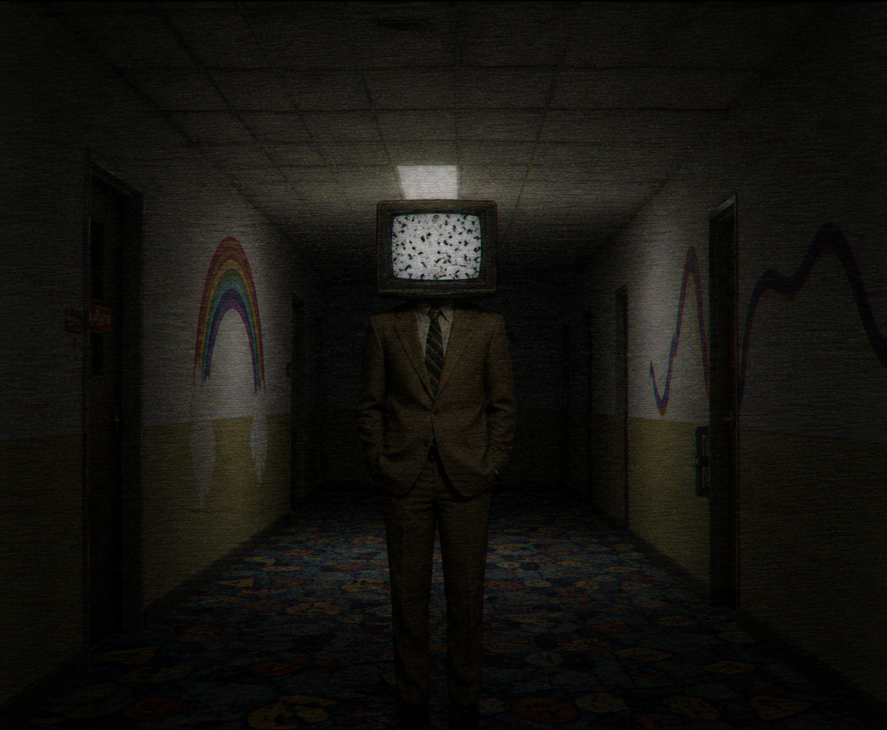
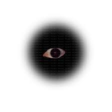

Registrul Creaturilor

#042 - Static Observer (Observatorul)
Aspect: Corp uman îmbrăcat în costum office din anii '80, dar în loc de cap are un televizor vechi care emite doar „pureci” și zgomot alb.
Comportament: Apare de obicei la capătul coridoarelor lungi. Nu se mișcă dacă îl privești direct, dar dacă clipești, se apropie cu câțiva metri.

#109 - Argus din Nori
Aspect: Un ochi uman uriaș, hiper-realist, care plutește printre norii perfect roz ai cerului artificial.
Comportament: Nu este agresiv, dar privirea lui provoacă o stare intensă de „déjà vu” și paranoia. Se crede că el este cel care randează decorul din jurul tău.

#007 - Ghidul de Plastic
Aspect: O siluetă din textură de revistă veche, decupată, având o floare mare de plastic sau un soare zâmbitor în loc de față.
Comportament: Îți va oferi indicații textuale pe ecrane sau bilețele pentru a „ieși” din nivel. Atenție: 50% din instrucțiunile sale sunt menite să te piardă definitiv.

#088 - The Window Shopper (Privitorul de Vitrine)
Aspect: O siluetă complet albă, bidimensională, care seamănă cu un manechin de magazin decupat dintr-o revistă veche. În loc de ochi, are un sticker cu un zâmbet perfect de reclamă.
Comportament: Apare doar în spațiile care seamănă cu mall-uri abandonate. Este inofensiv dacă te oprești și „admiri” vitrina timp de câteva secunde.

#213 - Memory Leak (Scurgerea de Memorie)
Aspect: Nu are un corp fizic fix. Se manifestă ca o umbră în formă de fluture uriaș sau ca o pată de textură cu rezoluție foarte mică (pixelată).
Comportament: Când te apropii, auzi în minte melodii din copilărie. Pentru a scăpa, trebuie să te gândești la un obiect modern care nu exista în acea epocă.